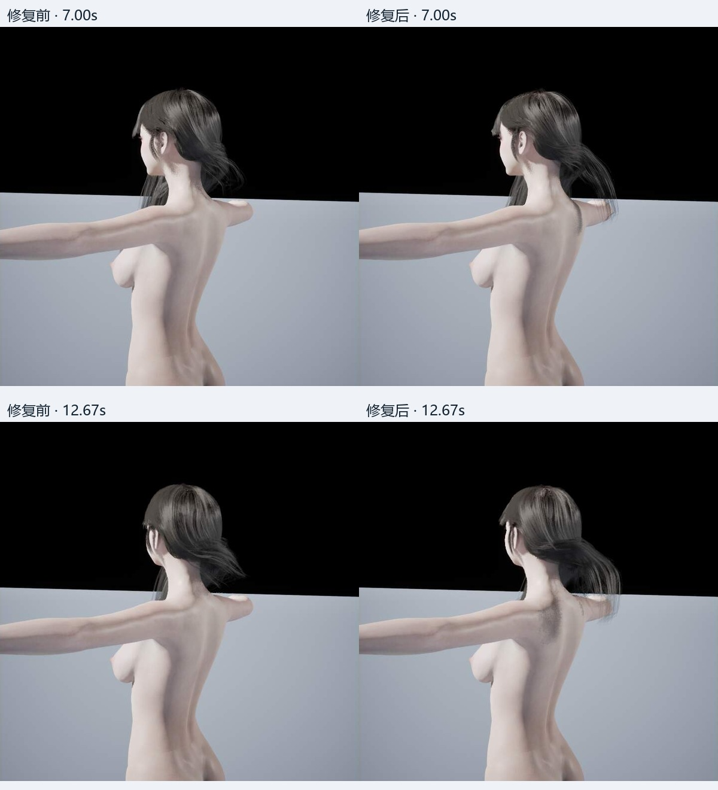
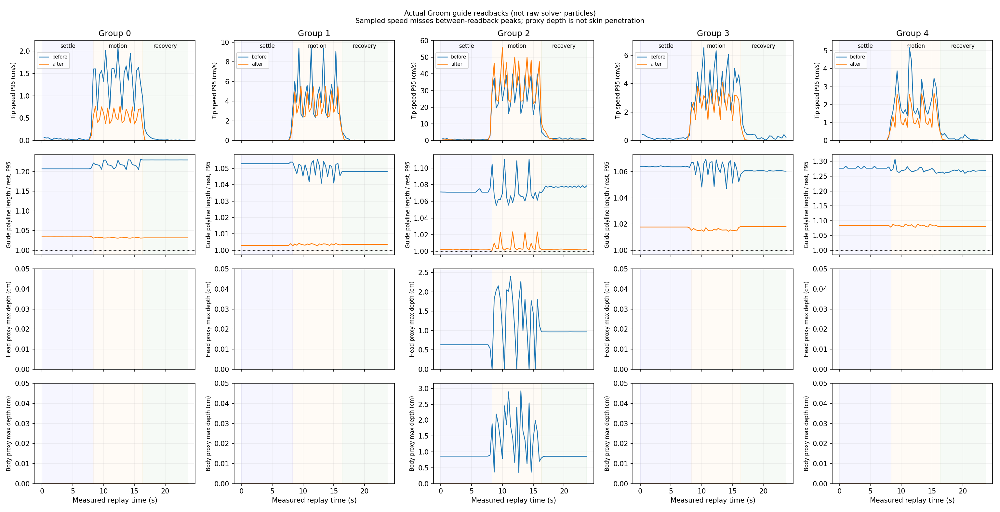
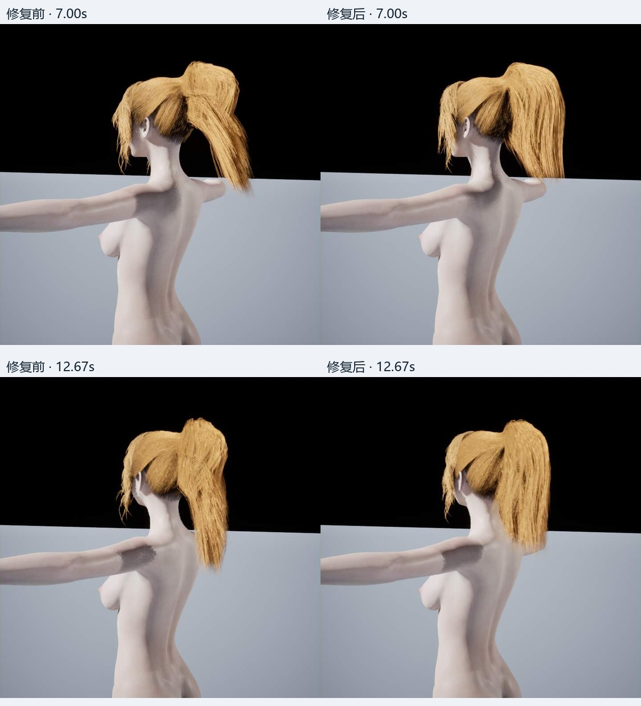
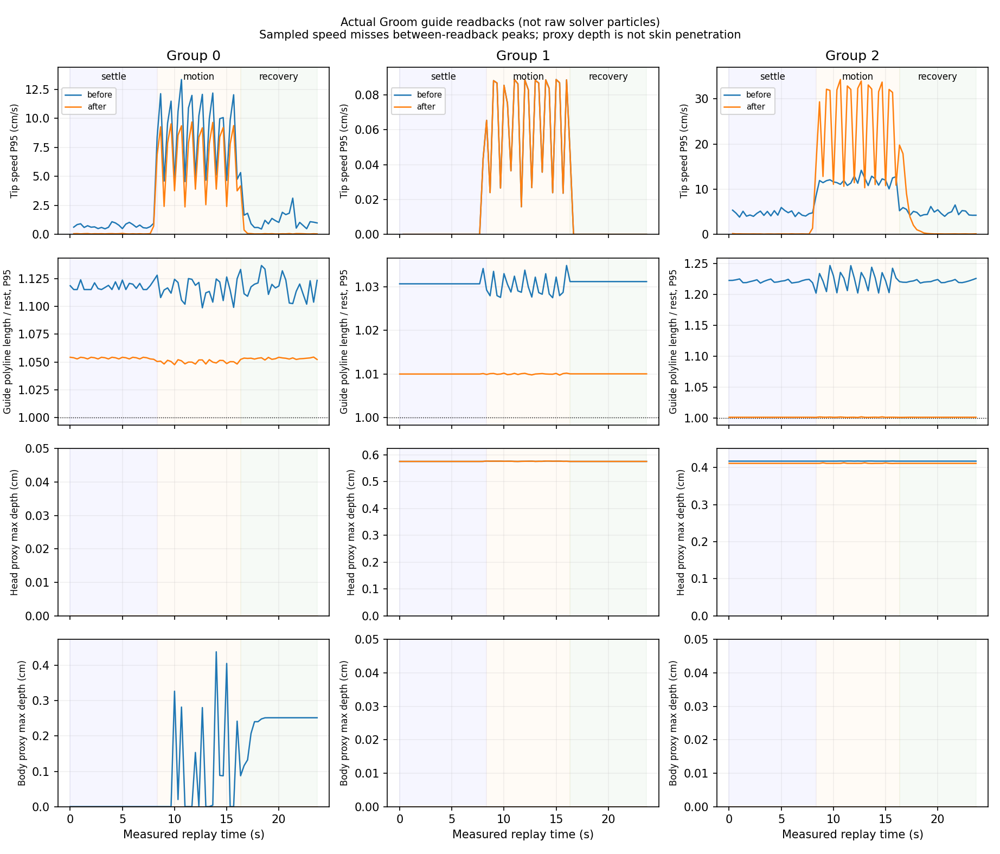

长发与马尾：VaM 同动作驱动下的 UE 修复
本轮状态
本轮已修改实际 UE Groom / Niagara 生成链路，生成新身份资产并完成正常 BP 的实跑。主对照沿用同一旧身体、实际 VaM 头骨矩阵和固定相机；最新 M 身体另做 Editor／PIE 环绕回归。只使用精细档，头发自碰撞保持关闭。以下数据说明本轮修复范围，不声称完全复刻 VaM 求解器，也不把代理接触通过当作真实皮肤全覆盖认证。
编译日志状态：SUCCEEDED_IN_LOG。完整指标与证据路径见 [metrics.json](metrics.json)。
同动作视频
0–8 秒沉降，8–16 秒摆头，16 秒后停止恢复。UE 使用实测 VaM 头骨矩阵，以四元数插值重采样，另有 3 秒预热。源每视角约 5 Hz，UE 编码 30 FPS；两者不是相同采样密度。源视频按实际时间戳重复最近已采样原帧，保存逐帧来源表，没有生成中间画面；开头不足一张源采样间隔时使用首张并明确记录。相机与光源方向复用实际源设置，但两引擎材质、光照和曝光不同。
高马尾 · 选用 prediction-structured
长发 · 选用 prediction-radius
根因、改动和未解决项
已修复 · 额外回形与原生约束的顺序冲突
旧链路在原生杆约束投影之后追加源点支撑，并叠加整组回形与固定最大位移；紧束路径另有碰撞后的附着体积上限。后置的源支撑会再次改变已求解的杆长度。只移除上限的消融曾使马尾长度最大比达到约 1.447，因此没有采用。自由发束链路把源逐点支撑放入 Advect 预测阶段，再交给 UE 原生长度、弯曲和碰撞约束；源支撑参考时钟与 UE 质量迭代次数解耦。保留源绘制刚性和有限的发束连接，移除自由发束中的重复整组回形／硬位移截断；紧束与支撑组继续保留整体形状约束。
[d15ee492fa2a-VamHairPredictionSupport.h](evidence/d15ee492fa2a-VamHairPredictionSupport.h) / [fd511f20fd14-VamHairStyleSolver.h](evidence/fd511f20fd14-VamHairStyleSolver.h) / [a7dbe035fc54-comparison.json](evidence/a7dbe035fc54-comparison.json)
已修复 · 胸部碰撞把节点推回重叠的头部代理
真实 GPU 节点读回定位到长发 G2、曲线 105、槽 15、t=12.667s：它距离胸部代理外表面约 0.805cm，却位于头代理内 2.285cm。实际 PhysicsAsset DI 的头部中心与骨骼变换最大差仅约 0.00000763cm，排除了绑定和矩阵错误；编译后的 HLSL 也确认查询使用当前点。根因是只处理一个最近代理后没有重新检查重叠体。现在在原生最后碰撞投影后按同一开关、半径重新查询，最多六次、无接触立即退出，只延续法向修正，避免重复施加摩擦。长发本轮原始 GPU 自由节点和发布导线的头代理穿入均未测到。
[f8569ee564fb-VamHairUnionContact.h](evidence/f8569ee564fb-VamHairUnionContact.h) / [af81775880c0-worst-contact-distances.json](evidence/af81775880c0-worst-contact-distances.json) / [f589075dc23f-raw-summary.json](evidence/f589075dc23f-raw-summary.json) / [661751865db0-metrics.json](evidence/661751865db0-metrics.json)
已修复 · 遗漏源发块及根部各自的碰撞半径
本机 VaM BuildParticles 调用证实：根点半径为零，第二点可使用 StandRootRadius，其后使用 StandRadius。旧 UE 松散组统一使用 0.8cm，长发 G4 实际源值却只有 0.1cm。现在按源导线／可见导线的来源关系转移各节点半径，同时用于 Solve 和 Project，避免短发被过大接触间距拉伸。G4 最大导线长度比从基线 1.340 降到 1.098；仅做联合代理修复时仍为 1.263。当前导出的 WorldScale 和头发变换缩放均为 1；VaM 实际使用 provider.lossyScale，独立提供者或非单位缩放仍需独立验证，不能外推已等价。
[745e005490e2-prepare_hair_constraints.py](evidence/745e005490e2-prepare_hair_constraints.py) / [fd511f20fd14-VamHairStyleSolver.h](evidence/fd511f20fd14-VamHairStyleSolver.h) / [55436a5c50b0-test_hair_union_contact.py](evidence/55436a5c50b0-test_hair_union_contact.py) / [a2bc438431dd-comparison.json](evidence/a2bc438431dd-comparison.json)
回归已修复 · 紧束组不能丢失整体附着体积约束
扩大验证到原发髻后，曾出现支撑组 G0 发梢最大位移 13.11cm、紧束组 G3 16.90cm。这个 m-final 发髻候选明确拒绝采用。源逐点刚性和有限邻接关系未完整表达紧束体整体形状，不能直接移除原有整体约束。构建器现在依照已有自动结构分类：loose 自由发束使用新预测支撑；supported／compact 保留既有整体形状约束，数值未调小。修复后的 M 候选同动作分别为 0.273cm 和 0.488cm；两侧 loose 散发仍使用新物理。没有按发型名称分支。
[fd511f20fd14-VamHairStyleSolver.h](evidence/fd511f20fd14-VamHairStyleSolver.h) / [6cc5c1f29cdf-metrics.json](evidence/6cc5c1f29cdf-metrics.json) / [2db4f9265802-metrics.json](evidence/2db4f9265802-metrics.json) / [8d332596aa69-compile-11.log](evidence/8d332596aa69-compile-11.log)
明确保留 · 马尾固定前段与碰撞代理重叠
马尾 G2 前段仍有约 0.413cm 的代理重叠；对应造型静态值约 0.407cm，支撑权重约 0.995–0.997。该群体所有超过 0.2cm 的点在原造型中也已处于代理内部。自动束发点之后的自由发尾，本轮没有测到头／身体代理穿入。没有把这些点从总表删掉，也没有把代理内部直接判为真实皮肤穿模；固定前段仍需结合真人物皮肤和视觉验收。 发际支撑组 G1 保留整体约束后，最大代理重叠为 0.577cm；超过 0.2cm 的采样点中，原造型在代理外而当前在内的计数为 0。这部分也明确保留在总表中。
[264dc7b46c43-events.json](evidence/264dc7b46c43-events.json) / [46e072f797af-summary.csv](evidence/46e072f797af-summary.csv)
未宣称完成 · 与 VaM 动态完全等价及任意动作皮肤接触
VaM 与 UE 的粒子布局、杆模型、重力／Weight 时间语义和发束连接保留数量仍有差别。VaM 源导线与 UE 重采样导线不能按数组索引做跨引擎 RMS。此轮修好了已证明的执行顺序、重叠代理和半径输入问题；视频仍应检查整体发型和运动美感。没有在本轮重新声称覆盖全身走跑跳、衣服接触或任意发型。
[8701dab9fa24-identities.json](evidence/8701dab9fa24-identities.json) / [report.html](../HairDynamicReference/report.html)
实际头骨矩阵核对
矩阵状态与门槛直接采用审计器输出（默认位置 0.01 cm、旋转 0.05°，并检查 scale 和 Groom 附着）。比较实际 UE socket 世界矩阵与输入重放矩阵；不使用 UI 欧拉角。矩阵通过只说明驱动一致，不代表发型、穿模和摆动质量通过。
| 发型 / 阶段 | 实际录像帧 | 矩阵状态 | 最大位置差 cm | 最大旋转差 ° |
|---|---|---|---|---|
| 高马尾 / before | 719 | PASS | 0.000 | 0.000 |
| 高马尾 / after | 719 | PASS | 0.000 | 0.000 |
| 长发 / before | 720 | PASS | 0.000 | 0.000 |
| 长发 / after | 720 | PASS | 0.000 | 0.000 |
发束运动
以下每一行都基于该 UE 发组对应阶段的首个采样。源 VaM 原始指标附在 metrics.json；其发组顺序、拓扑和参考时刻定义不同，不能把两表按组编号直接相减。
| 发型 / 阶段 / 发组 | 导线数 | 运动期发梢最大位移 cm | 运动期全点位移 RMS cm | 恢复末段速度中位数 cm/s |
|---|---|---|---|---|
| 高马尾 / before / 组 0 | 81 | 7.497 | 0.881 | 0.012 |
| 高马尾 / before / 组 1 | 60 | 0.031 | 0.007 | 0.000 |
| 高马尾 / before / 组 2 | 128 | 12.810 | 1.655 | 0.740 |
| 高马尾 / after / 组 0 | 81 | 4.803 | 0.695 | 0.000 |
| 高马尾 / after / 组 1 | 60 | 0.031 | 0.007 | 0.000 |
| 高马尾 / after / 组 2 | 128 | 11.286 | 2.085 | 0.000 |
| 长发 / before / 组 0 | 104 | 2.452 | 0.144 | 0.000 |
| 长发 / before / 组 1 | 6 | 3.250 | 0.618 | 0.000 |
| 长发 / before / 组 2 | 128 | 19.779 | 4.369 | 0.000 |
| 长发 / before / 组 3 | 19 | 3.539 | 0.341 | 0.000 |
| 长发 / before / 组 4 | 15 | 2.786 | 0.203 | 0.000 |
| 长发 / after / 组 0 | 104 | 0.351 | 0.058 | 0.000 |
| 长发 / after / 组 1 | 6 | 1.741 | 0.419 | 0.000 |
| 长发 / after / 组 2 | 128 | 31.441 | 5.282 | 0.009 |
| 长发 / after / 组 3 | 19 | 2.628 | 0.270 | 0.000 |
| 长发 / after / 组 4 | 15 | 0.924 | 0.106 | 0.000 |
E2 运动期结构与代理接触
折线长度比 = 当前 GPU 导线折线长度 / 导入造型的折线长度；1 表示长度相同。这里统计运动期全部导线和几何采样的 P95、最大、最小值。它是最终导线几何变化，不是直接读取求解器约束误差。头/身代理深度来自同一运动期原始审计，排除了根部前缀；不等同真实皮肤穿模深度。必须结合视频检查根部、尾部和停止恢复。
| 发型 / 阶段 / 发组 | 长度比 P95 | 长度比最大 | 长度比最小 | 头代理深度最大 cm | 身体代理深度最大 cm |
|---|---|---|---|---|---|
| 高马尾 / before / 组 0 | 1.122 | 1.172 | 0.713 | 0.000 | 0.439 |
| 高马尾 / before / 组 1 | 1.030 | 1.041 | 0.998 | 0.577 | 0.000 |
| 高马尾 / before / 组 2 | 1.220 | 1.279 | 0.858 | 0.417 | 0.000 |
| 高马尾 / after / 组 0 | 1.051 | 1.076 | 0.983 | 0.000 | 0.000 |
| 高马尾 / after / 组 1 | 1.010 | 1.016 | 0.998 | 0.577 | 0.000 |
| 高马尾 / after / 组 2 | 1.002 | 1.016 | 0.995 | 0.413 | 0.000 |
| 长发 / before / 组 0 | 1.223 | 1.358 | 0.976 | 0.000 | 0.000 |
| 长发 / before / 组 1 | 1.055 | 1.060 | 1.014 | 0.000 | 0.000 |
| 长发 / before / 组 2 | 1.072 | 1.168 | 0.935 | 2.397 | 2.925 |
| 长发 / before / 组 3 | 1.066 | 1.080 | 0.953 | 0.000 | 0.000 |
| 长发 / before / 组 4 | 1.274 | 1.340 | 0.990 | 0.000 | 0.000 |
| 长发 / after / 组 0 | 1.033 | 1.107 | 0.934 | 0.000 | 0.000 |
| 长发 / after / 组 1 | 1.005 | 1.005 | 0.999 | 0.000 | 0.000 |
| 长发 / after / 组 2 | 1.004 | 1.069 | 0.970 | 0.000 | 0.000 |
| 长发 / after / 组 3 | 1.017 | 1.020 | 0.913 | 0.000 | 0.000 |
| 长发 / after / 组 4 | 1.091 | 1.098 | 0.927 | 0.000 | 0.000 |
Editor、PIE 和性能
Game 世界录像不冒充 Editor 或 PIE 验证。下表使用明确指定的生产 M 角色证据，身份记录在 metrics.json 的 validation_asset；它与上方同身体隔离对照分别核验。Editor 为正常 BP 的资产／附着／求解器绑定检查，动态运动单独由完整 PIE 录像验证。未提供本轮专用性能采样时，帧时间保持未验证；截图、GPU 读回和视频编码速度不能用于游戏性能结论。60 Hz source-clock 是 UE 适配器的参考时钟，VaM 源 fixed-step 尚未实测，不能称为完整等价复刻。性能数值为整帧时间，头发增量包含渲染与模拟，不是孤立求解器 GPU 时间。
| 发型 | Editor 证据 | PIE 证据 | 精细平均 ms | P95 ms | 头发增量 ms |
|---|---|---|---|---|---|
| 高马尾 | passed | MEASURED | 8.748 | 10.984 | 1.810 |
| 长发 | passed | MEASURED | 9.741 | 12.629 | 2.308 |
M 生产角色接入回归
以下证据独立记录生产 M 角色上的集成结果。生产身体的资产身份、骨骼权重或碰撞代理可能与上方隔离对照不同；本节不加入同身体因果对照的前后指标，也不据此改写旧对照身份。实际 Editor、PIE、动作范围和性能以所链接文件为准。
长发：同条件静帧与变化曲线
两列采用相同动作时刻、相机、材质和灯光。只移除了相机两侧黑边；没有重新绘制头发或角色。折线变化曲线来自真实 GPU 导线采样，不能当作逐帧约束残差。
trace.csv / bundle.json / check.json / metrics.json


高马尾：同条件静帧与变化曲线
两列采用相同动作时刻、相机、材质和灯光。只移除了相机两侧黑边；没有重新绘制头发或角色。折线变化曲线来自真实 GPU 导线采样，不能当作逐帧约束残差。
trace.csv / bundle.json / check.json / metrics.json


M 生产角色 · 长发
新资产 c8682e7d40b4ea7df306f1b473678ead71fdafba838d8fc832f49dde967f41d8。Editor 正常 BP 配置检查通过；PIE 实际头骨矩阵通过，运动期最大发梢位移 31.60cm。精细档整帧平均 9.74ms、P95 12.63ms。此录像为 M 身体上的 360° 环绕回归；相机不同，不代替上方同相机 VaM 对照。
角色 Blueprint、Configuration 与独立头发资产 / check.json / metrics.json / summary.json / process.json / m-final-long-pie-orbit.json
M 生产角色 · 高马尾
新资产 70a619b7d3db2204f4fa0bfb971095351267693df1c20387dec51e00f41233cb。Editor 正常 BP 配置检查通过；PIE 实际头骨矩阵通过，运动期最大发梢位移 11.28cm。精细档整帧平均 8.75ms、P95 10.98ms。此录像为 M 身体上的 360° 环绕回归；相机不同，不代替上方同相机 VaM 对照。
角色 Blueprint、Configuration 与独立头发资产 / check.json / metrics.json / summary.json / process.json / m-structured-ponytail-pie-orbit.json
M 生产角色 · 原发髻
新资产 908ed65383fcfe8371996a5b2ccc1899229bbc8a6348014f30691206b6ffe921。Editor 正常 BP 配置检查通过；PIE 实际头骨矩阵通过，运动期最大发梢位移 5.50cm。精细档整帧平均 13.01ms、P95 17.26ms。此录像为 M 身体上的 360° 环绕回归；相机不同，不代替上方同相机 VaM 对照。 原发髻使用已采样的头部动作作为驱动；本轮没有新增 VaM 发髻动态源对照。 左为明确拒绝的候选，右为恢复自动紧束组约束后的正式版本。
角色 Blueprint、Configuration 与独立头发资产 / check.json / metrics.json / summary.json / process.json / m-structured-bun-pie-orbit.json
构建、身份、提交与性能边界
C++ 编译成功；54 项 Python 回归通过（39 项求解／重放，15 项发型导入）。生产 M 的 156 骨骼身体保留，头部兼容性由真实 A1 输入验证。新发型分别引用独立 Hair 资源和 Hairstyle 组合，旧角色资产未覆盖。性能为 1920×1080、单角色、Contact 关闭、臀腿 Jiggle 开启、每阶段 300 帧；头发增量包含渲染和模拟，关闭前后存在计时漂移，因此不把一次均值变化宣称为可靠加速。PIE 的退出码 1 若标记 owned cleanup，是录像完整后关闭该次独立 Editor，不是忽略崩溃。
compile-11.log / python-tests-structured.log / python-import-tests-final.log / m-base-compatibility.json / delivery.json / run_m_integration.py / run_structured_regression.py
数据范围和验收边界
VaM 内部粒子、UE 重新采样的模拟导线、最终渲染发丝具有不同拓扑。没有建立逐点来源同一性，因此本报告不输出跨引擎最近邻 RMS。运动指标只在同一求解器、同一发组内统计：GPU buffer 已经位于附着头部的 Groom 局部空间，不能再做一次逆头骨变换。数值直接复用同 capture/replay 哈希的 audit_hair_dynamic_comparison.py 结果，以各阶段首个采样为参考，记录发梢幅度、全点 RMS/P95/Max 和末段速度。
发丝位移变大本身不是成功标准；必须同时检查束根、发髻、轮廓、肩背穿模和停止后的恢复。碰撞代理重叠也不能冒充真实皮肤穿入。本页保留所有候选的完成状态及原始路径，失败或缺失候选不会被写成通过。
本轮固定 5 substeps。源支撑时钟与 UE 质量迭代数解耦，并不等于整个动态系统对 timestep/substeps 不变；位置回形的半群关系无法证明速度重建和等效加速度也不变。60 Hz 是适配器参考时钟，尚未测得 VaM 的实际 fixed-step，不能称为完整等价复刻。
跨阶段渲染点指标只使用稳定 ID 交集。如果 active point count / LOD 改变导致交集只剩少量根部点，不能从很小的 render excursion 推断整片可见头发不动。完整导线数据与真实视频需要同时判断。
Epic Groom 物理设置 将 Project Stretch、Project Bend 和 Project Collision 描述为 XPBD 迭代后的投影步骤；本轮对照需要检查额外造型支撑插入该顺序后是否又破坏长度或接触。文档中的默认频率不是本轮 VaM 或 UE 的实际运行时钟证据。